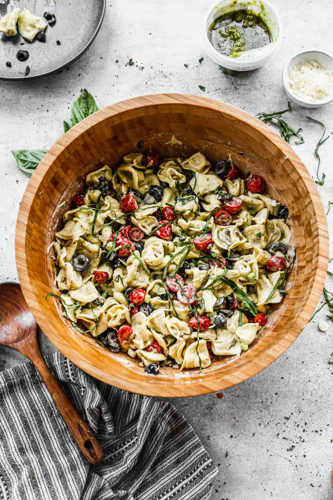

Pesto Tortellini

Description
Whether you're looking for a side dish or the main course, this Pesto Tortellini
will have everyone asking for more!
Ingredients
- 20 ounce package of cheese tortellini
- 1 cup of caesar salad dressing
- 1 1/2 cups of cherry tomatoes, halved
- 6 ounces black olives, drained and chopped
- 3 green onions, chopped
- 1/4 cup basic pesto
- salt and ground pepper to taste
- 1/4 teaspoon garlic powder
- 1/3 cup sunflower seeds
- 2/3 cups freshly grated parmesan cheese, divided
- 6-8 fresh basil leaves, chopped for garnish
Steps
- Cook tortellini according to package instructions. Drain and allow to cool.
- Add tortellini to large bowl and toll with 1/2 of the caesar dressing.
- Add tomatoes, olives, green onions, pesto, salt, pepper, garlic powder, 1/3 cup parmesan,
sunflower seeds and toss to combine. You may add more caesar dressing to
make it saucier if you want.
- Garnish with remaining parmesan and chopped basil
- Serve and enjoy!
Return Home